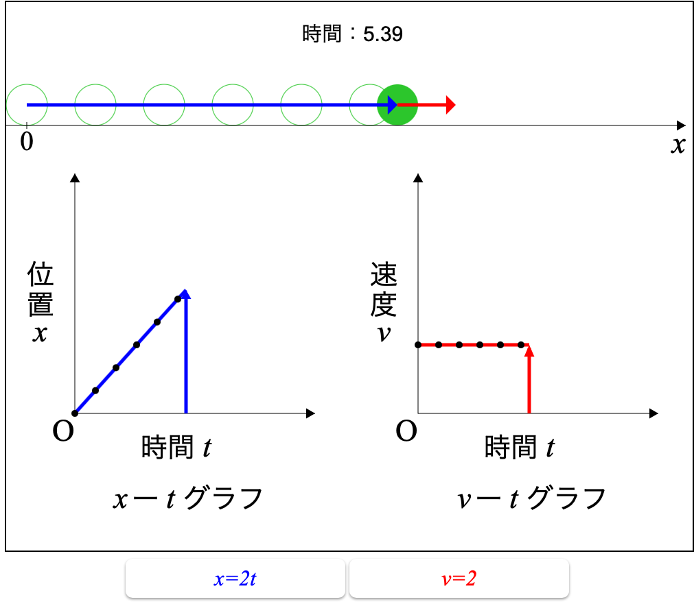
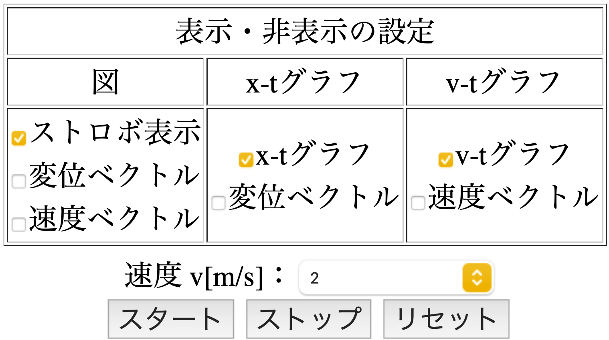

等速直線運動
はじめに
このページでは「等速直線運動」の使用方法等を説明します．動作画面について
以下が動作画面です．
上図：等速直線運動の動画．1秒間隔でストロボ表示されます（緑球（縁のみ））．青矢印が変位ベクトル，赤矢印が速度ベクトル．
下図左：x-tグラフ．1秒間隔での変位を表示（黒点）．青矢印で変位の大きさを示しています．
下図右：v-tグラフ．1秒間隔での速度を表示（黒点）．赤矢印で速度の大きさを示しています（等速直線運動なので一定で表示）．
※表示の都合上，変位ベクトル・速度ベクトルは上図と下図で矢印の長さが一致していません．
速度を設定すると，x-tグラフの式（青）とv-tグラフの式（赤）が動作画面の下に表示されます．
各設定欄について
以下の表から表示・非表示の設定，速度の選択，動作の制御ができます．
x-tグラフ，v-tグラフが表示されている状態で，ストロボ表示をすると，1秒あたりの変位の大きさと速度が黒点で表示されます．
速度を設定すると，x-tグラフの式（青）とv-tグラフの式（赤）が動作画面の下に表示されます．